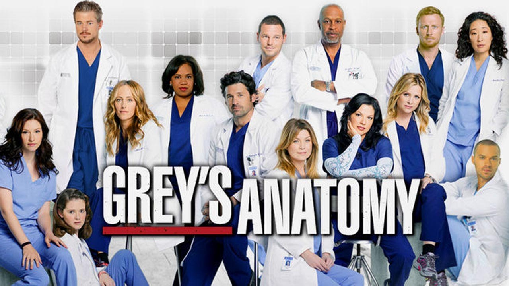

Dhruva's Favorite TV Shows
Big Bang Theory

Big Bang Theory is one of my favorite shows.
This show is about these physicist, Leonard and Sheldon, whose lives are all changed once Penny
moves in across the hall to their apartment.
This is show is funny, and each of the characters have a special role in the series.
Flash

Flash is also my favorite show.
This show involves a guy who saves other people's lives with his super natural power (speed).
He uses his power to find out who killed his mother when he was younger. I started this show 2 days ago and I finished
watching the first season! I would defenitely reccommend this show if you are looking for something new to watch.
Grey's Anatomy
Grey's Ananotmy is a medical tevevision series in which each of the characters try to
save others' lives while keeping their personal lives balanced as well.
Christina Yang is my favorite character in the show. She is humorous yet intelligent which makes you fall in love with her character.